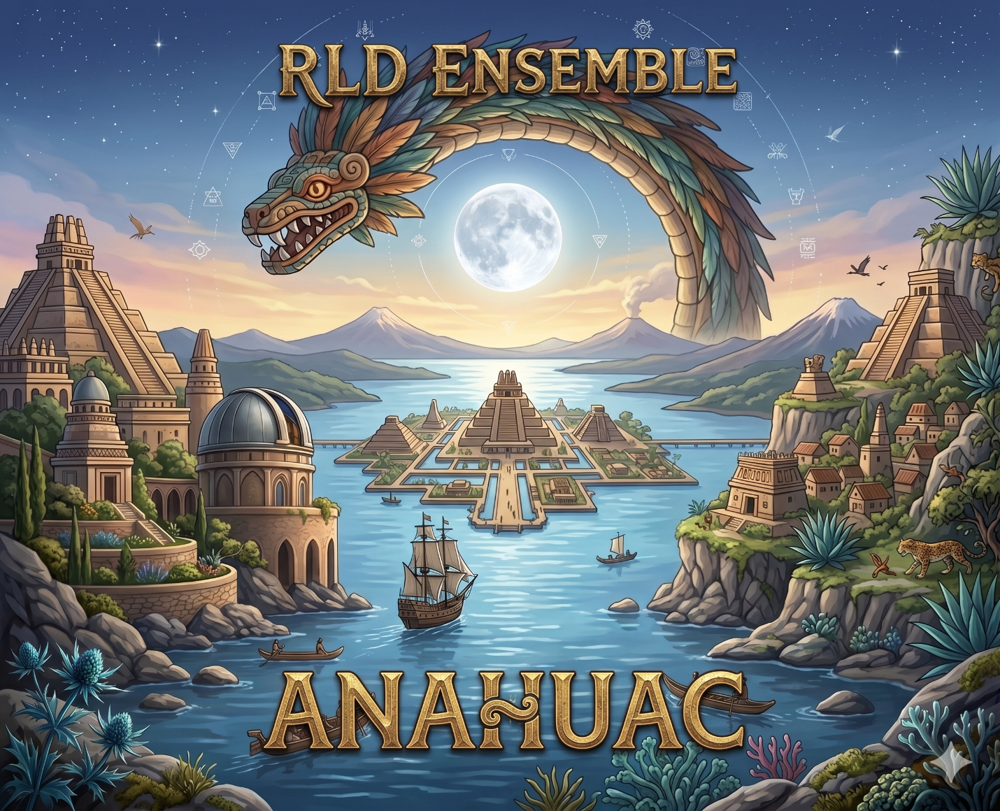

RLD ENSEMBLE · Segundo Proyecto
CRÓNICAS
DEL ANÁHUAC
Cuatro mundos paralelos que no siguen un orden cronológico sino una lógica más antigua: la de las historias que coexisten sin pedirse permiso.
Desde las voces prehispánicas del Anáhuac hasta el folklore sobrenatural de Centroamérica, desde los mares del Caribe colonial hasta las calles y cafeterías de hoy.
4
Álbumes
4
Lenguas
∞
Mundos
Todas las canciones son originales, escritas por RLD en el cruce entre inteligencia artificial, software de producción y creatividad humana.

Colección Completa
LOS CUATRO CAPÍTULOS

Escuchar en